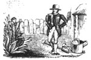
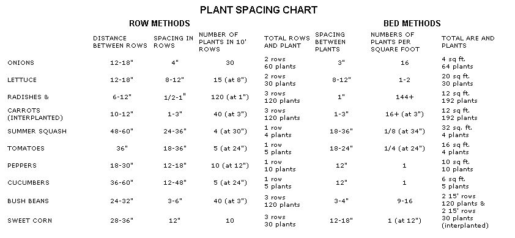

Double-dug or rototilled beds? Row or deep-mulch gardening? Which of these methods is best?
Last spring we reported (in issue 87, page 150) that, in addition to maintaining our large Eco-Village garden and learning to work a draft horse, MOTHER's staff gardeners were starting an experimental four plot garden to observe and compare four different growing methods. The following enlightening assessment is condensed from head gardener Walker Abel's fullreport on the results.
The four separate gardening methods we set out to study and compare were [1] the hand-worked, biodynamic/French intensive technique, in which the soil is loosened to a depth of two feet with a spade and fork and then shaped into a four-foot-wide raised bed . . . [2] the rototilled, raised-bed method, in which the entire area is rototilled and the loosened pathway soil spaded and raked up onto a four-foot-wide raised bed (our version was then treated like a standard biodynamic/ French intensive garden) . . . [3] a conventional row design, in which the entire plot is rototilled, then planted in single rows with pathways in between . . . and [4] the deepmulch technique, as popularized by Ruth Stout, in which the entire growing area is continuously covered with a generous layer of organic mulch. (To plant in such a garden, the mulch on top is temporarily brushed aside and the seeds or seedlings put into the lower, and more completely decomposed, layer.)
I don't want to put too much emphasis on the differences in harvest we obtained from the four plots. There were a number of variables involved, and-due to our many other gardening duties-our experimental work was not as exacting as it could have been. Each method can obviously be used to produce beautiful and bountiful vegetables. But, for what it's worth, the biodynamic/French intensive (BFI) and rototilled, raised-bed (RRB) areas were comparable: They yielded both the most and the healthiest vegetables. The conventional rototilled (CR) garden produced substantially less food than did our "winners," and the deep-mulch (DM) plot fared the worst, with stunted growth and persistent insect problems. In fairness, though, let me say right away that a deep-mulch garden requires a few years to develop the mature compost layer that is essential to its maximum effectiveness. So that plot should-I think-perform better a couple of years from now.
However, the real significance of this experiment could be seen in the other striking differences between the four minigardens. The plots were a remarkable learning tool-for us, for our garden apprentices, and for the approximately 30,000 visitors who came through the Eco-Village in 1984. The gardens led us into the discussion of certain principles and questions that all gardeners should ponder, regardless of their chosen methods.
The most obvious differences between the minigardens were their respective sizes. We put in the same number of plants of the ten most popular home-gardener's vegetables in each plot, yet the BFI and RRB gardens each occupied a 4' X 42' bed . . . while the CR and DM gardens each took up a 10' X 42' area requiring 2-1/2 times as much room. Row gardens use as much as two-thirds of their area for pathways, while bed plots need just one-third of their area for that purpose. In an urban or suburban situation, where growing space is at a premium, this could be a critical difference.
The four methods treat the soil differently and vary in their ability to promote good, overall soil health. In the BFI bed, the earth was dug to a depth of two feet. After rototilling the RRB area to a depth of six inches and then raking the pathway dirt onto the bed, we had loosened the soil to about ten inches in that bed. [EDITOR'S NOTE: For more information on creating "quick" raised beds, turn to page70.] The CR garden soil was turned to a Rototiller's "reach": merely six inches down.
The radically different DM garden was never dug or tilled; however, it would work best if established over a soil that has previously been well worked and improved. (Our test plot had been gardened for just one year, to raise a rototilled patch of wheat.)
The virtue of a deeply worked soil was most noticeable during a heavy rain. The biodynamic/French intensive bed was relatively immune to erosion, no matter how heavy the rain. The rototilled, raised-bed plot was also quite erosion-resistant, but did remain soggy in its lower layers longer than did the BFI bed. The conventional row garden definitely tended to puddle up and suffer runoff problems. The deep-mulch plot, though, showed no erosion effects: It soaked up water like a sponge.
Soil health was further promoted in the two raised-bed gardens by the fact that those beds were never stepped on, eliminating the root growth and drainage problems caused by soil compaction.
We worked the same amount of compost into each minigarden. Since the two raisedbed gardens were 168 square feet each and the other plots 420 square feet apiece, the beds received 2-1/2 times as much compost per square foot as the row plots . . . resulting in a much more efficient use of compost. All that compost was readily available to the beds' plants; none of it was compacted in pathways, as was the case in the non bed gardens. The soil should also benefit from this higher ratio of organic matter, a fact which could make a significant difference over the coming years.
Of the four methods evaluated in this experiment, the DM system required the least time. Most of the work was done in the fall, when mulch materials were gathered and spread over the entire garden. There was no digging, weeding, or cultivating-tasks that require considerable time in the other methods.
The other three methods, of course, require that the soil be worked each year. There did not seem to be a significant time difference between the two rototill methods, although the raised-bed garden did take a little more time, for constructing the beds and doing more hand-weeding.
The BFI method was clearly the most time-consuming . . . the extra labor resulting, of course, from the need to hand-dig the two-foot-deep beds. The exact amount of time that bed preparation takes depends largely on whether the soil is sandy or clayey. We spent about eight hours digging the 168-square-foot bed in our minigarden's heavy clay soil. Two hours of that was spent on the initial double-digging, while six hours was required for tilthing (breaking up the soil clumps with a hand fork). This time should decrease each year as the soil improves.
A philosophy that measures success only in terms of immediate yields and benefits, though common in agriculture (and elsewhere) today, should be antithetical to a conscientious gardener's beliefs. The real test of success is sustainability-one's efforts should help grow a healthy soil as well as an abundance of vegetables.
Any of the four methods in our experiment will, if it includes adequate organic fertilization and proper care, be sustainable and lead to soil improvement. But there is little doubt in my mind that the hand-worked, biodynamic/French intensive method leads to the most rapid improvement in soil condition and the most profound changes over time. It can literally transform the nature of a soil. The depth to which the ground is worked, the fact that the beds are permanent and never compacted, and the concentration of amendments are all very beneficial to the soil. Even BFI's dense "equilateral triangle" planting system, which involves spacing plants so that their outside leaves just overlap and thus create a living mulch, helps to protect the soil surface from the damaging effects of hot summer sun, and concentrates the efforts of ground-loosening roots, as well. [EDITOR'S NOTE: For more on this system, see "Seed Starting as MOTHER's Gardeners Do It" on page 48.]
The rototilled, raised-bed method approximates these effects but never reaches down to loosen the subsoil or break up any hardpan. Nevertheless, it will bring about a far greater and more rapid soil improvement than will a conventional rototilled garden, which will usually have no permanent distinction between vegetable area and pathway. Indeed, the downward motion of a Rototiller's tines can actually lead to the creation of a hardpan in the soil just at the bottom of its reach . . . diminishing drainage and blocking root movement. The pathways-as much as two-thirds of the garden, remember-will be walked upon, pounded by rains, and baked by the sun, and thus those areas will have little chance to improve.
The deep-mulch system can, in principle, substantially enrich the soil. Essentially, it imitates the natural process of the forest, where fallen leaves gradually break down to a rich, black humus. People tell of long-established DM gardens that have soil-under the mulch-so loose you can push your hand down into it. The drawback is time: It may take years for the soil to become significantly developed.
While the above words pretty well sum up the lessons we learned from the first year of our minigarden experiment, I'd like to share a major-and undiscussed-reason why we choose to demonstrate the biodynamic/French intensive method in our main Eco-Village gardens. This method, with its antecedents in Chinese and ancient Greek cultures, its reflection of the influence of Rudolf Steiner and of the refinements added by Alan Chadwick, is inseparable from a philosophy that looks beyond the immediate personal gain of food on the table. Chadwick said, "The ob ject of gardening is not production-it is happiness in God's Creation." He meant not only the happiness of the gardener as he or she works in the air and sun or enjoys the fruit of those labors, but also the happiness (or well-being) of the soil, the plants, and the other living creatures making up the plot's "ecosystem." The gardener expresses in his or her own garden the love and caring that he or she feels for the earth and for all life.
It is clearly possible to have this same attitude while using a gardening method other than BFI. This technique, however, encourages a caring philosophy every step of the way. It's built right into the method-from the intimate connection with the soil that comes through hand-digging, to the sowing of seeds in flats and their gentle transplanting, to the beauty of the living-mulch concept.
We like to urge our Eco-Village visitors to try this method, even if they put in only one hand-dug bed beside a large, rototilled garden. That one bed will become a laboratory in which the gardener can learn about soil and plants and about the subtle, interweaving factors that lead to health in each. It will be a place to enjoy the physical movements of digging and tilthing, and a place to see for oneself if Chadwick was right: if the object of gardening is happiness in God's Creation.
|
 |
 |
|